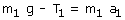
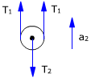
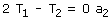
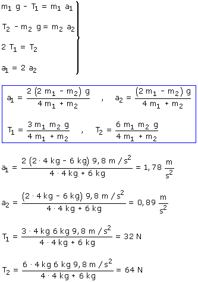

Si el problema no da los datos de las poleas se sobreentiende que sus masas son despreciables. En este caso no se cuenta con las rotaciones de las poleas y se estudia la traslación de los bloques
La polea fija girará en sentido contrario al de las agujas del reloj
El bloque 1 bajará y el bloque 2 subirá, sus aceleraciones serán diferentes porque no están unidos directamente por una cuerda
 |
 |
|
 |
 |
La polea móvil no tiene masa La polea movíl y el bloque 2 tienen la misma aceleración, distinta de la del bloque 1
|
 |
Relación entre las aceleraciones:

(Observa que a1 = 2·a2 y que T1 = T2/ 2. La aceleración del cuerpo 1 es el doble de la del cuerpo 2 y en cambio la tensión que sufre es la mitad)
Combinando las ecuaciones obtenidas resulta un sistema de incógnitas: T1, T2, a1, a2

¿Te has dado cuenta de que un bloque de 4 kg hace subir otro de 6 kg?